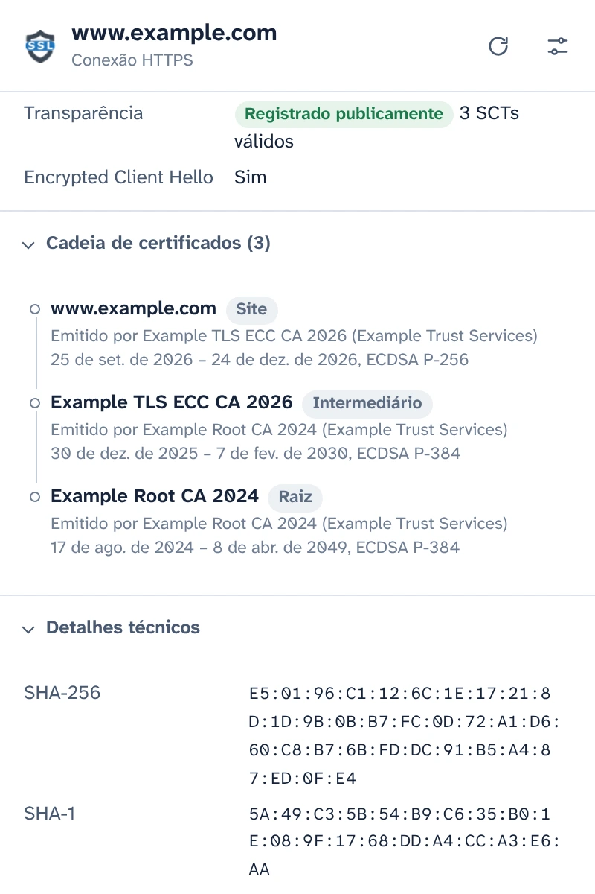
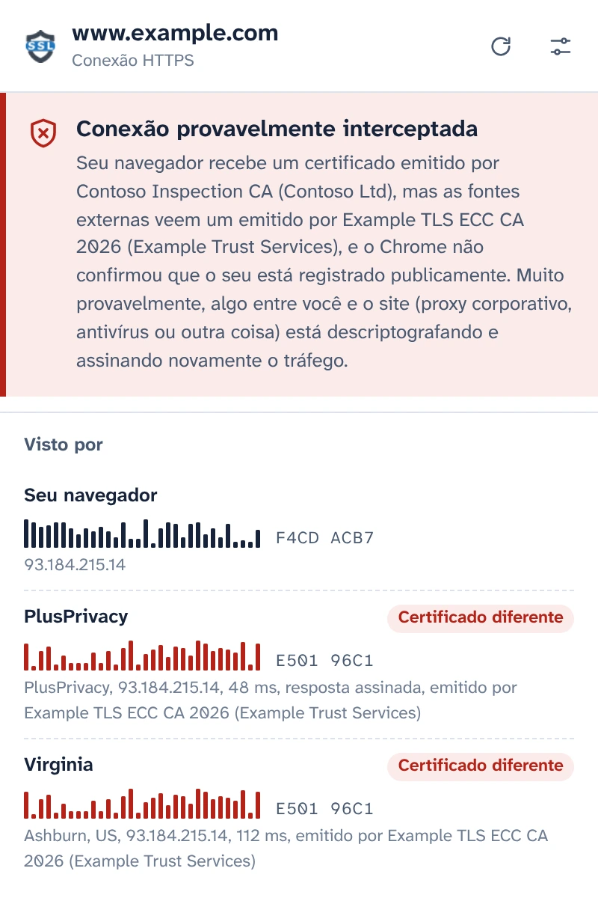
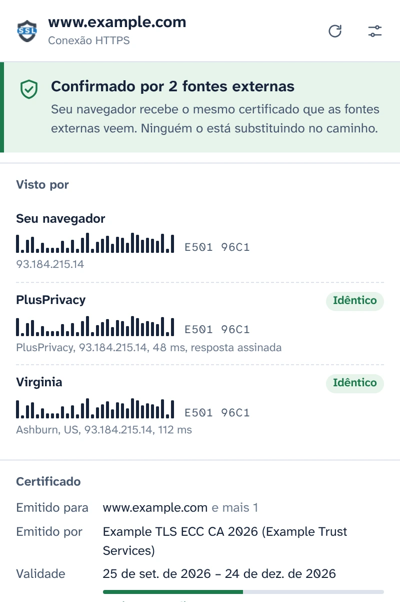
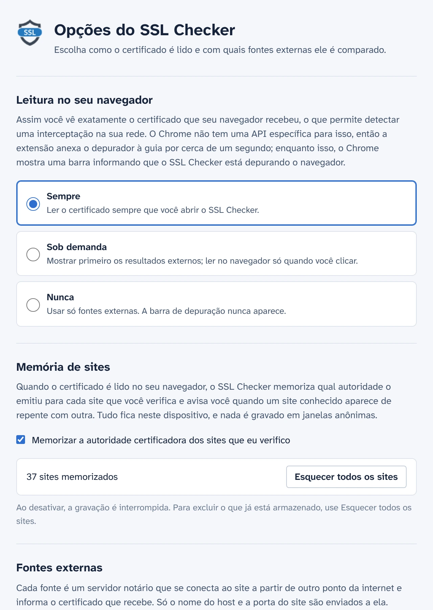

Veja o certificado que seu navegador realmente recebeu
O SSL Checker lê o certificado do site na sua guia diretamente do Chrome e o compara com o que notários independentes veem de outros pontos da internet. Se os dois forem diferentes, algo entre você e o site o está substituindo.
Gratuito e de código aberto. Sem conta, sem estatísticas de uso.
Confirmado por 2 fontes externasConexão provavelmente interceptada
Seu navegador recebe o mesmo certificado que as fontes externas veem. Ninguém o está substituindo no caminho.Seu navegador recebe um certificado emitido por Contoso Inspection CA, mas as fontes externas veem um emitido por Example TLS ECC CA 2026.
- Seu navegador E501 96C1F4CD ACB7
- PlusPrivacy IdênticoCertificado diferente E501 96C1
- Virginia IdênticoCertificado diferente E501 96C1
Todos os detalhes da conexão
O que o Chrome recebeu para esta guia, lido no próprio navegador em vez de buscado novamente em um servidor.
- Nomes cobertos, emissor, validade e dias restantes, nível de validação (DV, OV, EV)
- Versão do TLS, troca de chaves incluindo híbridos pós-quânticos, cifra e Encrypted Client Hello
- Status do Certificate Transparency e os carimbos de data/hora assinados do certificado
- A cadeia completa, as impressões digitais e todas as extensões. Copie o PEM ou baixe a cadeia.

Detecte a interceptação de HTTPS
Proxies corporativos, a verificação de HTTPS dos antivírus e invasores em redes Wi-Fi públicas funcionam do mesmo jeito: eles descriptografam seu tráfego e entregam ao seu navegador um certificado próprio. A página parece normal e o cadeado continua lá.
O SSL Checker pergunta ao notário PlusPrivacy, e a qualquer notário que você adicionar, qual certificado o mesmo site mostra a eles. Os notários se conectam de outros pontos da internet, sem passar pelo que estiver na sua rede, e as impressões digitais são comparadas:
- Mesmo certificado em toda parte: confirmado.
- O seu é diferente e não está registrado publicamente: provavelmente interceptado. O SSL Checker indica a autoridade que emitiu o substituto e reconhece produtos de inspeção conhecidos.
- As fontes divergem entre si: isso é informado, junto com o que cada caso pode significar.

Respostas que ninguém no caminho pode falsificar
Algo que intercepta seu tráfego também poderia tentar responder em nome de um notário. Não vai conseguir: o notário PlusPrivacy assina cada resposta com Ed25519, e o SSL Checker verifica a assinatura, um número aleatório enviado com cada pergunta e o site sobre o qual perguntou. Uma resposta forjada, reenviada ou redirecionada é recusada, e o pop-up avisa que algo a alterou.
Execute seu próprio notário
O notário é de código aberto: um pequeno serviço Node.js para Docker, protegido contra excesso de solicitações e contra solicitações a redes privadas. Instale-o em qualquer servidor, adicione o endereço e a chave dele em Opções, e as respostas dele serão verificadas da mesma forma.

Você decide quando usar o depurador
O Chrome não tem uma API de extensões para o certificado de uma página carregada, então o SSL Checker anexa o depurador do Chrome à guia por cerca de um segundo para lê-lo, e nesse meio-tempo o Chrome mostra a barra de depuração. Em Opções, você escolhe quando isso acontece:
- Sempre que você abrir o pop-up
- Sob demanda, com um clique no pop-up
- Nunca: só os notários são consultados
Ele memoriza os sites que você verifica
O SSL Checker memoriza qual autoridade certificadora cada site usa e avisa você quando um site conhecido aparece de repente com outra, por exemplo em uma nova rede Wi-Fi. Essa memória fica no seu dispositivo, nunca é usada em janelas anônimas e pode ser desativada ou apagada em Opções.

Privacidade desde a concepção
- Nada é lido nem enviado até você concordar no pop-up.
- Só o nome do host e a porta do site saem do seu dispositivo, no corpo de uma solicitação HTTPS aos notários que você usa.
- O notário PlusPrivacy não guarda registro dos sites verificados. Você pode desativá-lo ou consultar só notários que você mesmo executa.
- Sem estatísticas de uso, sem rastreamento, sem conta. A memória de sites nunca sai do seu dispositivo.
- Este site também não tem estatísticas de uso e não carrega nada de outros servidores.
POST /v1/cert
Content-Type: application/json
{
"host": "www.example.com",
"port": 443,
"nonce": "Xq3MpTb0vR9kLs2eWn5yZA"
}